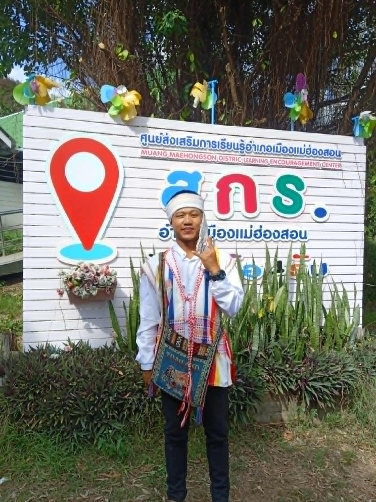

ကယန်းလူမျိုးများအကြောင်း

မင်္ဂလာပါ ကယန်းပြည်နယ် သတင်းဌာနာ ကနေ ကြိုဆိုပါတယ်။
ကယန်းလူမျိုးများ ဟာ များသော အားဖြင့် ရုမ်းပြည်နယ်တောင်ပိုင်း ၊ ကရင်ပြည်နယ် မြောက်ပိုင်း၊ ကယားပြည်နယ် ၊
နေပြည်တော် ကောင်စီ တို့တွင် နေထိုင် ကြပါသည်။
ကယန်းလူမျိုးများ၏ အဓိက လုပ်ငန်းများမှာ လယ်စိုက်ခြင်း၊ တောင်ယာ စိုက်ခြင်း၊ ငရုတ်သီး စိုက်ခြင်း၊ စနွေး စိုက်ခြင်း တို့ကို
အဓိက လုပ်ကိုင်ကြသည်။
ကျွန်တော်တို့သည် ကယန်းဒေသ အမှတ်(၂) ခရိုင် ၊ အမှတ်(၃)မြို့နယ်တွင် နေထိုင်ကြပါသည်။
ပိုမို သိချင်လိုပါက
Email:1711joseph@gmail.com
Email:09637joseph@gmail.com
phone:09773846450